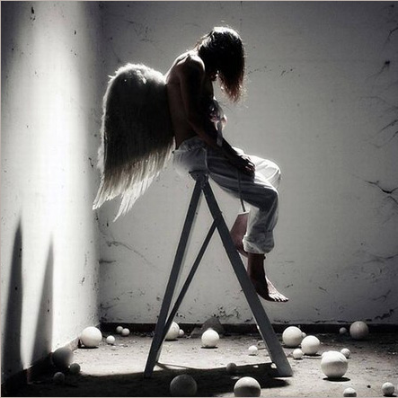
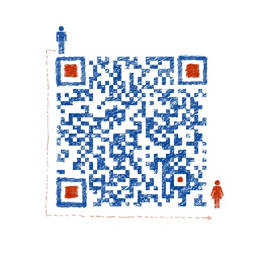

<!DOCTYPE html><html><head><title>Samele 个人网站</title><meta charset="utf-8"><meta http-equiv="Content-Type" content="text/html; charset=UTF-8"><meta http-equiv="Content-Language" content="zh"><meta http-equiv="content-language" content="zh-CN"><meta name="theme-color" content="#222325"><meta name="viewport" content="width=device-width,initial-scale=1,maximum-scale=2"><meta http-equiv="X-UA-Compatible" content="IE=edge,chrome=1"><meta name="keywords" content="Samele,个人网站,博客,开发者,程序猿,编程,代码,开源,IT网站,数据库,MySQL,开发工具,Git,GitHub,Gitee,IDEA, Hexo,Linux,前端基础知识,HTML,CSS,JavaScript,jQuery,Ajax,Bootstrap,vue,工具&#x2F;资源,教程,分享,推荐,娱乐,CMD,Developer,Programmer,Coder"><meta name="renderer" content="webkit"><meta http-equiv="x-dns-prefetch-control" content="on"><meta name="Description" content="生命像一场漫长的修行，与我遗憾亦赠我惊喜"><meta property="site_name" content="Samele个人网站"><!-- Open Graph --><meta property="og:type" content="website"><meta property="og:url" content="https://samele.icu/index.html"><meta property="og:title" content="Samele个人网站"><meta property="og:site_name" content="Samele个人网站"><meta property="og:description" content="生命像一场漫长的修行，与我遗憾亦赠我惊喜"><meta property="og:locale" content="zh-CN"><meta name="twitter:card" content="summary"><meta name="twitter:title" content="Samele个人网站"><meta name="twitter:description" content="生命像一场漫长的修行，与我遗憾亦赠我惊喜"><link rel="stylesheet" href="https://cdn.jsdelivr.net/gh/samelehub/CDN@latest/fonts/font.min.css"><link rel="stylesheet" href="https://cdn.jsdelivr.net/npm/typeface-roboto@0.0.54/index.min.css"><link rel="stylesheet" href="css/style.css"><link rel="icon" href="favicon.ico" type="image/x-icon"><link rel="dns-prefetch" href="https://samele.icu"><meta name="HandheldFriendly" content="True"><meta name="MobileOptimized" content="480"></head></html><body><main><div class="content content-intro"><div class="content-inner"><div class="wrap fade"><h2 class="content-title">Samele</h2><p></p><h3 class="content-subtitle" original-content="也许世界就这样 我也还在路上">&nbsp;</h3><p></p><a class="enter">enter</a><div class="arrow arrow-1"></div><div class="arrow arrow-2"></div></div></div><div class="shape-wrap"><svg class="shape" width="100%" height="100vh" preserveAspectRatio="none" viewBox="0 0 1440 800" xmlns:pathdata="http://www.codrops.com/"><path d="M-44-50C-52.71 28.52 15.86 8.186 184 14.69 383.3 22.39 462.5 12.58 638 14 835.5 15.6 987 6.4 1194 13.86 1661 30.68 1652-36.74 1582-140.1 1512-243.5 15.88-589.5-44-50Z" pathdata:id="M -44,-50 C -137.1,117.4 67.86,445.5 236,452 435.3,459.7 500.5,242.6 676,244 873.5,245.6 957,522.4 1154,594 1593,753.7 1793,226.3 1582,-126 1371,-478.3 219.8,-524.2 -44,-50 Z"></path></svg></div></div><div class="content content-main"><div id="page"><div id="card"><div class="card-inner fade"><header><h1 data-translate="name">Samele</h1><h2 id="signature" data-translate="signature" original-content="You walk , but I run"></h2></header><ul><li id="whole-first"><a href="https://samele.icu/blog/" aria-label="Blog"><i class="icon icon-bokeyuan"></i><span data-translate="Blog">Blog</span></a></li><li id="whole-second"><a href="https://samele.icu/blog/about/" aria-label="About"><i class="icon icon-xiaolian"></i><span data-translate="About">About</span></a></li><li id="half-first"><a href="mailto:samele_lu@163.com" aria-label="Contact me" target="_blank"><i class="icon icon-email"></i><span data-translate="Contact me">Contact me</span></a></li><li class="quarter" id="quarter-first"><a aria-label="Wechat"><i class="icon icon-wechat"></i></a></li><li class="quarter" id="quarter-second"><a href="https://github.com/samelehub" target="_blank" rel="noopener" aria-label="Github"><i class="icon icon-github"></i><span data-translate="Github">Github</span></a></li><li class="quarter" id="quarter-third"><a href="javascript:;" rel="noopener" aria-label="Twitter"><i class="icon icon-twitter"></i><span data-translate="Twitter">Twitter</span></a></li><li class="quarter" id="quarter-fourth"><a href="javascript:;" aria-label="other"><i class="icon icon-other"></i></a></li></ul></div></div></div></div><script src="https://cdn.jsdelivr.net/npm/animejs@2.2.0/anime.min.js"></script><script>window.$ = (selector) => document.querySelector(selector)
      const getOriginalContent = (selector) =>
        $(selector).getAttribute('original-content')
      window.subtitle = getOriginalContent('.content-subtitle')
      window.signature = getOriginalContent('#signature')</script><script src="js/main.js"></script></main></body>